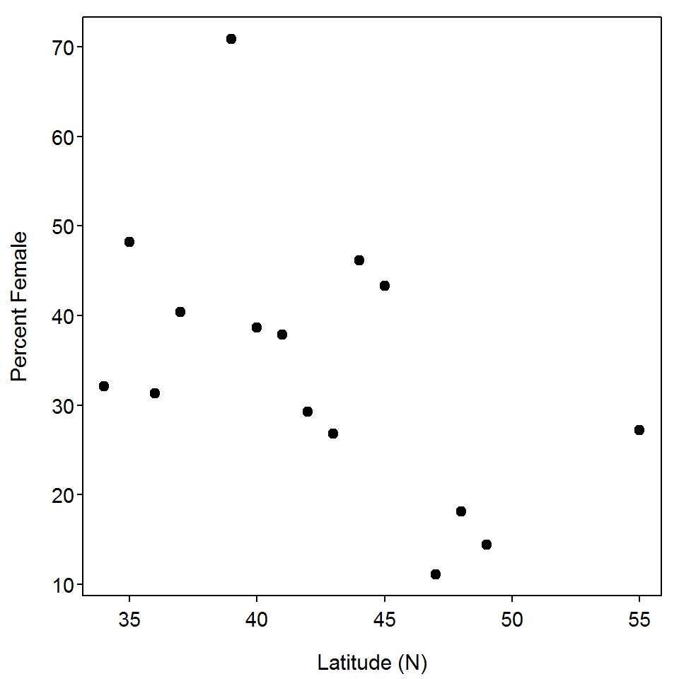

Scatterplots
 Kelly (1998) used data from the Christmas Bird Count (in 1994) to examine the latitudinal variation in the sex ratio of Eastern Belted Kingfishers (Ceryle alcyo). The scatterplot below illustrates the relationship between the percent of female Kingfishers and the latitude of the survey.
Kelly (1998) used data from the Christmas Bird Count (in 1994) to examine the latitudinal variation in the sex ratio of Eastern Belted Kingfishers (Ceryle alcyo). The scatterplot below illustrates the relationship between the percent of female Kingfishers and the latitude of the survey.

Use this scatterplot to answer these questions.
- What is an individual in this example?
- What types of variables are the two variables used here?
- What was the maximum latitude examined?
- What was the minimum percent of females observed?
- What are the values for both variables for the point at the very top of the plot?
- How many surveys recorded fewer than 30% female Kingfishers?
- How many surveys were between 40 and 45oN?
- What is the association exhibited in this plot?
Associations
Identify whether, and describe your reasoning, you would expect to see a positive, negative, or no (neutral) association between each pair of variables below.
- Weight and gas mileage of a car.
- Proportion of the population that was vaccinated and the proportion of the population that became ill.
- The expected salary of an individual and how many years they invested in post-secondary education.
- Exam score and the age of the student’s mother.
- Mean summer temperature and the proportion of households that have an air conditioner (recorded for communities from across the U.S.).
- Proportion of population with a post-secondary education and the proportion of the population that have been incarcerated.
- Temperature and sales of ice cream.
- Hours spent exercising and percent body fat.
- Average annual mount of snowfall and the proportion that support conceal-and-carry gun laws (recorded for states from across the U.S.)